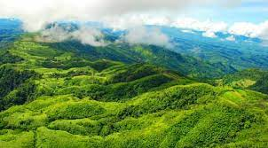

অনেক সৌন্দর্যে সমৃদ্ধ একটি নাম মেঘলা পর্যটন কমপ্লেক্স । শহর থেকে মাত্র চার কিলোমিটার দূরে মেঘলা পর্যটন কেন্দ্রের অবস্থান। এখানে বিশাল লেকের ওপর আকর্ষণীয় দুটি ঝুলন্ত ঝুলন্ত সেতু মানেই ঝুলন্ত সেতু যা দেশে বিরল ঘটনা। দেশের কোথাও এমন নজির খুঁজে পাওয়া যাবে না। চিত্ত বিনোদনের জন্য এখানে রয়েছে ক্যাবল কার, ট্যুরিস্ট ট্রেইন, শিশুপার্ক, সাফারি পার্ক, চিড়িয়াখানা, স্পিডবোটে ভ্রমণের সুবিধা এবং রাত্রি যাপনের জন্য রেস্ট হাউজ। এ ছাড়া কমপ্লেক্সে ছোট্ট পরিসরে গড়ে তোলা চা বাগান মেঘলা পর্যটন স্পটের সৌন্দর্য বাড়িয়েছে বহুগুণে। পর্যটকদের সুবিধার্থে মেঘলা পর্যটন স্পটে নিচে নামতে রাস্তার পাশাপাশি তৈরি করা হয়েছে আকর্ষণীয় সিঁড়িও। মেঘলা পর্যটন স্পটের চতুর পাশে রয়েছে ছোট ছোট গোলঘর এবং উন্নত যোগাযোগ ব্যবস্থাও। সব মিলিয়ে মেঘলা পর্যটন স্পটটি অপূর্ব। এক টিকেটে এত কিছু দেখার সুযোগ আর কোথাও নেই একমাত্র মেঘলা ছাড়া।

অবস্তান: বান্দরবান জেলা বাংলাদেশের দক্ষিণ-পূর্বাঞ্চলের চট্টগ্রাম বিভাগের একটি প্রশাসনিক অঞ্চল। এটি বাংলাদেশের দক্ষিণ-পূর্ব দিকে চট্টগ্রাম বিভাগে অবস্থিত। এটি পার্বত্য চট্টগ্রাম অঞ্চলের অন্তর্গত। চট্টগ্রাম থেকে বান্দরবান জেলার দূরত্ব ৭৫কিলোমিটার। বান্দরবান জেলার আয়তন ৪৪৭৯ বর্গ কিলোমিটার। বান্দরবান সদর মারমা রাজা অংশুপ্রু-এর বাসভূমি। এই অঞ্চলের অন্য দুইটি জেলা হল রাঙামাটি ও খাগড়াছড়ি। বান্দরবান জেলা এর নৈসর্গিক বৈচিত্র্যের জন্য বাংলাদেশের একটি গুরূত্বপূর্ণ পর্যটন কেন্দ্রে পরিণত হয়েছে।

আপনাদের যদি আরো কোন কিছু জানার থাকে তাহলে এ ক্লিক করুন
অথবা ভিডিও দেখতে চাইলে এখানে ক্লিক করুন